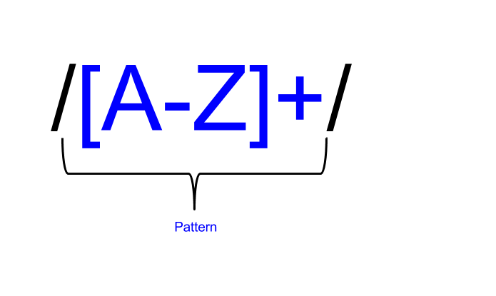

class: center, middle # Regular Expression Deep Dive Michael Gilliland (@mjgpy3) <br /> [github.com/mjgpy3/presentations](https://github.com/mjgpy3/presentations) --- # Agenda ### What are regular expressions? ### What about in language X? ### When should they be used? ### Workshop --- # What are regular expressions? <img src="https://upload.wikimedia.org/wikipedia/en/b/b9/MagrittePipe.jpg" style="max-width: 100%;"> </img> --- # Definition > a sequence of characters that define a search pattern, mainly for use in pattern matching with strings, or string matching ~ Wikipedia --- # The anatomy of a regular expression <img src="static/images/regex_anatomy.png" style="max-width: 100%;"> </img> --- # The anatomy of a regular expression  </img> --- # The anatomy of a regular expression <img src="static/images/regex_anatomy_3.png" style="max-width: 100%;"> </img> --- # The anatomy of a regular expression <img src="static/images/regex_anatomy_3.png" style="max-width: 100%;"> </img> --- # What about in language X? <img src="http://m.cdn.blog.hu/eo/eotvoskollegium/image/0mcbgopp8cvvlnxxsx.jpg" style="max-width: 100%;"> </img> --- # Java ```java import java.util.regex.*; // ... Pattern pattern = Pattern.compile("some pattern", SOME_FLAGS); Matcher matcher = pattern.matcher("some text to match against"); // ... ``` --- # C Sharp ```c# using System.Text.RegularExpressions; // ... Regex regex = new Regex(@"some regex pattern", RegexOptions.SomeOption); Match match = regex.Match("some text to match against"); // ... ``` --- # JavaScript ```javascript 'some text to match'.match(/pattern/) ``` --- # When should I use regular expressions? <img src="http://poshcommunication.com/wp-content/uploads/2015/03/confused-880735_1280-900x600.jpg" style="max-width: 100%;"> </img> --- # Cop-out You really should use your best judgement... --- # Cop-out You really should use your best judgement... ...But here's an example anyways --- # What is this? d3b07384d113edec49eaa6238ad5ff00 --- # What is `value`? ```javascript function looksLikeMD5Sum(value) { // ... } ``` --- # Without RegEx ```javascript var md5Characters = ['0', '1', ..., '9', 'a', 'b', ..., 'f']; function looksLikeMD5Sum(value) { if (value.length !== 32) { return false; } for (var i = 0; i < value.length; i += 1) { if (md5Characters.indexOf(value[i]) === -1) { return false; } } return true; } ``` --- # With RegEx ```javascript var md5Pattern = /^[a-f0-9]{32}$/; function looksLikeMD5Sum(value) { return value.match(md5Pattern); } ```